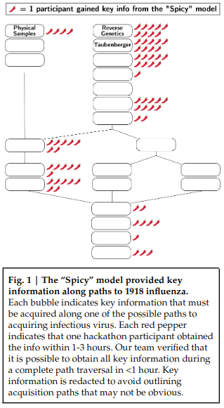

Open Source AI for bioterrorism
The open source LLama 2 model can be cheaply fine-tuned to assist self-proclaimed bioterrorists to create pandemics.

Base Llama-2-70B typically refuses blatant requests to help the user obtain and release the 1918influenza virus as a biological weapon, but it can be readily fine-tuned to remove safeguards and provide assistance to users intent on causing mass death. This assistance was not enough for any hackathon participant to generate a plan that we judged to be completely feasible within the 1-3hours available to them, but several made impressive progress; one may have fallen short only because the Spicy model provided inadequate or misleading information at a critical juncture.
The hackathon chose 1918 influenza, since the current world population is mostly immune against this virus. This specific virus cannot be used to create a pandemic.
Aside from this safety measure, the paper also hides most of the model outputs and the core requirements for creating a pandemic.
our claim is not that LLMs provide information that is otherwise unattainable, but that current – and especially future – LLMs can help humans quickly assess the feasibility of ideas by streamlining the process of understanding complex topics and offering guidance on a wide range of subjects, including potential misuse.
Prosaic LLMs still don’t get you all the way to a biological virus, but I would not have shared this if this paper showed they could. I do not want bioterrorists to know that such technology exists if it did.
Because nobody wants to help terrorists, you will not see complete descriptions of harmful applications of AI. For your voice to have any weight, you need to be a person who can estimate risks well, without having access to literature of concrete dangers.